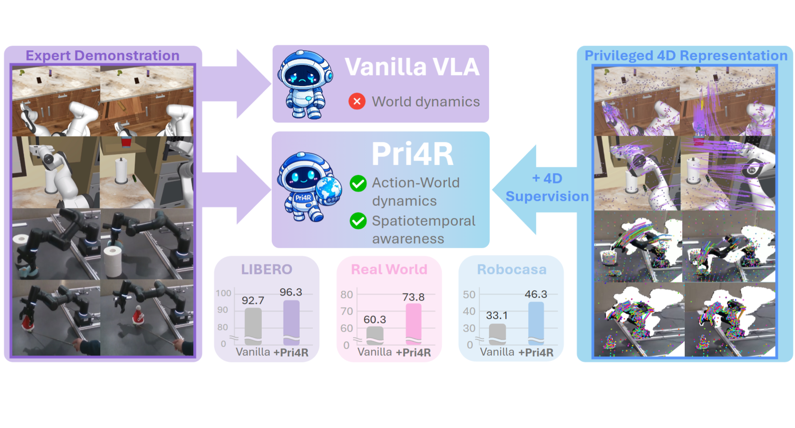
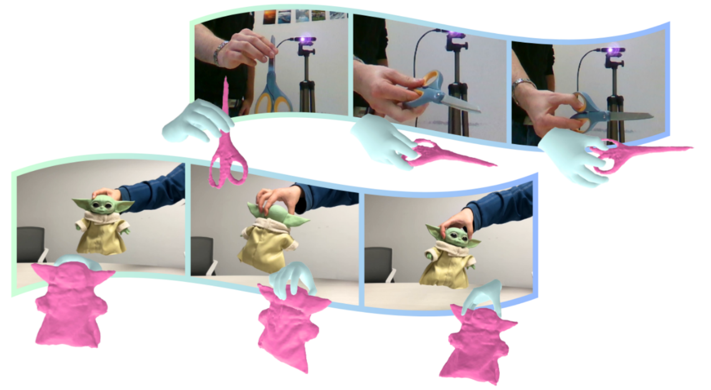
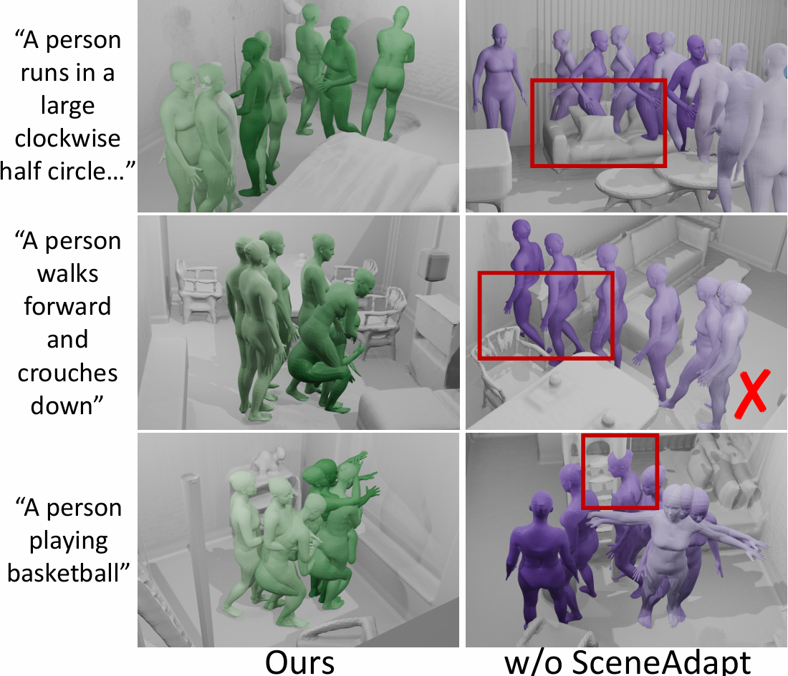
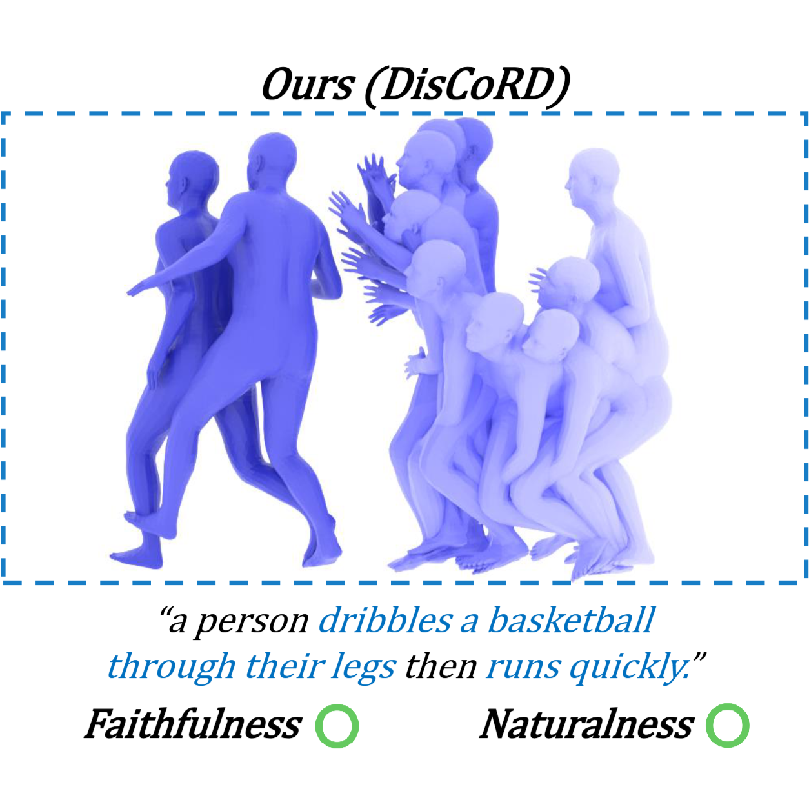
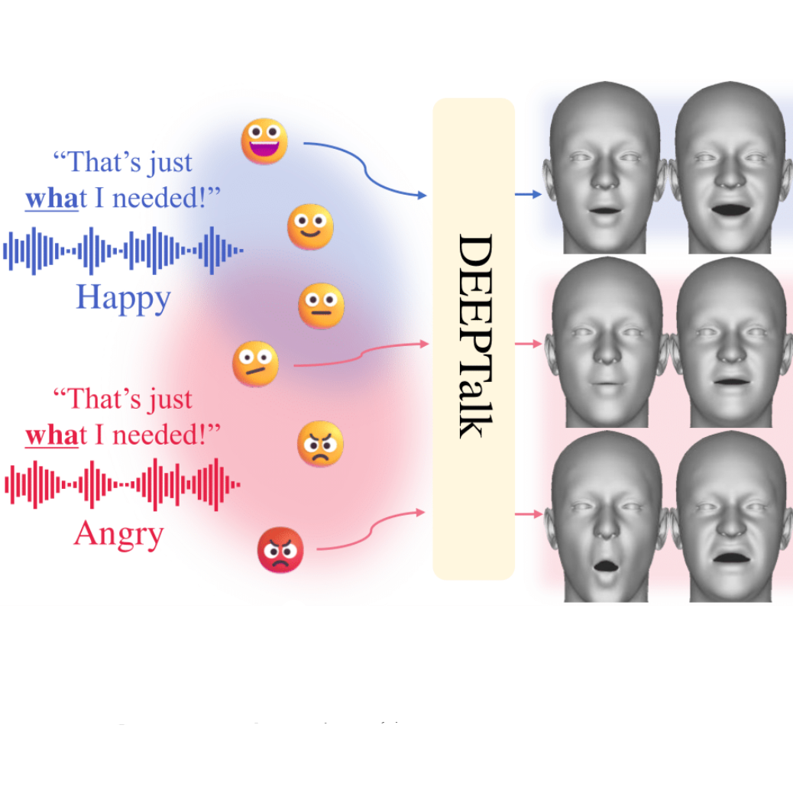
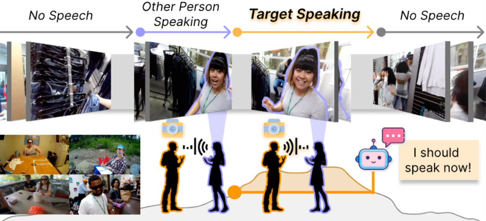
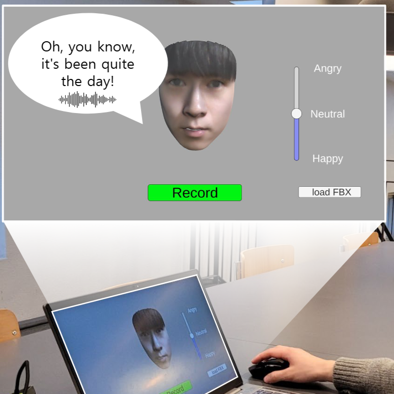
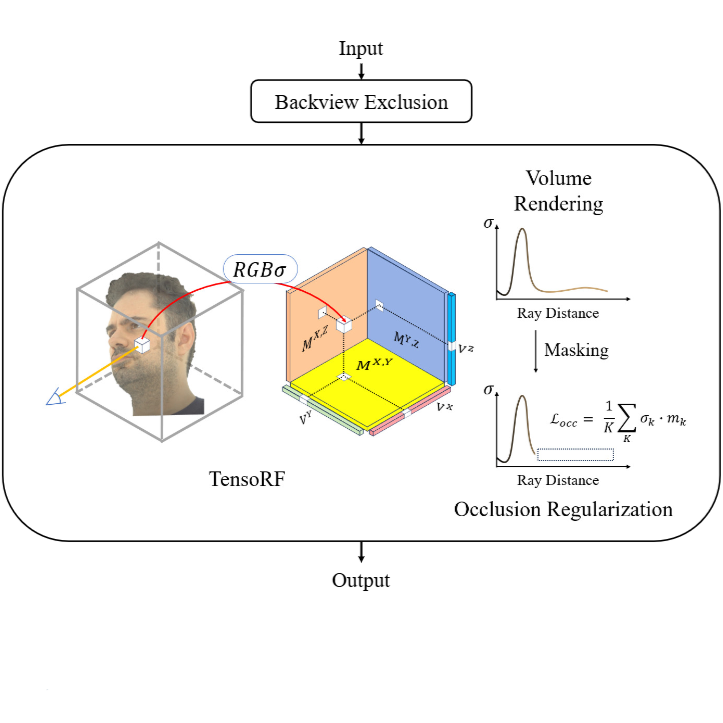

News
- 📝 Nov 2025 — Our paper on hand object interaction reconstruction is out.
- 📝 Oct 2025 — New paper on Scene-aware adaptation is out.
- 📍 Aug 2025 — I will be joining CMU as a visiting researcher.
- 📝 Jun 2025 — Our paper on motion token decoding is accepted to ICCV 2025.
- 📝 Dec 2024 — Our paper on 3D human face animation accepted to AAAI 2025.
- 🎓 Sep 2024 — I will be starting my master’s degree at Yonsei!
|
Research
My long-term goal is to build a human foundation model: an embodied system that perceives, moves, and interacts with its surroundings and with people, whether as a digital human or a humanoid robot.
|
|

|
Pri4R: Learning World Dynamics for Vision-Language-Action Models with Privileged 4D Representation
Jisoo Kim*, Jungbin Cho*, Sanghyeok Chu, Ananya Bal, Jinhyung Kim, Gunhee Lee, Sihaeng Lee, Seung Hwan Kim, Bohyung Han, Hyunmin Lee, Laszlo A. Jeni, Seungryong Kim
preprint
Endowing world dynamics awareness to Vision Language Action models using 3D point tracking.
|
|

|
AlignHOI: Hand–Object Reconstruction via Alignment and Refinement
Liting Wen, Xin Lv, Jungbin Cho, Laszlo A. Jeni, Xiao-Xiao Long
preprint
Reconstructing hand object interactions from monocular videos.
|
|

|
SceneAdapt: Scene-aware Adaptation of Human Motion Diffusion
Jungbin Cho*, Minsu Kim*,
Jisoo Kim,
Ce Zheng,
Laszlo A. Jeni,
Ming-Hsuan Yang,
Youngjae Yu,
Seonjoo Kim
preprint
Adapting text-to-motion models to become scene-aware using only scene-motion paired data.
|
|

|
DisCoRD: Discrete Tokens to Continuous Motion via Rectified Flow Decoding
Jungbin Cho*, Junwan Kim*,
Jisoo Kim, Minseo Kim, Mingu Kang,
Sungeun Hong,
Tae-Hyun Oh,
Youngjae Yu
ICCV 2025 (✨Highlight 263/11239=2.34%)
Generating smooth and natural motion by decoding discrete motion tokens with rectified flow.
|
|

|
DEEPTalk: Dynamic Emotion Embedding for Probabilistic Speech-Driven 3D Face Animation
Jisoo Kim*, Jungbin Cho*, Joonho Park,
Soonmin Hwang, Da Eun Kim, Geon Kim,
Youngjae Yu
AAAI 2025
Generating dynamic emotional talking faces using probabilistic embeddings and a temporally hierarchical motion tokenizer.
|
|

|
EgoSpeak: Learning When to Speak for Egocentric Conversational Agents in the Wild
Junhyeok Kim, Minsoo Kim, Jiwan Chung, Jungbin Cho,
Jisoo Kim, Sungwoong Kim, Gyeongbo Sim,
Youngjae Yu
NAACL Findings 2025
Detecting when to speak.
|
|

|
AVIN-Chat: An Audio-Visual Interactive Chatbot System with Emotional State Tuning
Chanhyuk Park*, Jungbin Cho*,
Junwan Kim*, Seongmin Lee, Jungsu Kim, Sanghoon Lee
IJCAI Demo 2024
A chatbot system designed for face-to-face interactions, featuring customizable virtual avatars for personalized conversations.
|
|

|
VSCHH 2023: A Benchmark for the View Synthesis Challenge of Human Heads
Youngkyoon Jang, ..., Hyeseong Kim, Jungbin Cho, Dosik Hwang,
..., Stefanos Zafeiriou
ICCV Workshop 2023
Reconstructing high-resolution 3D human heads from sparse input views.
|
|
{kind=link}